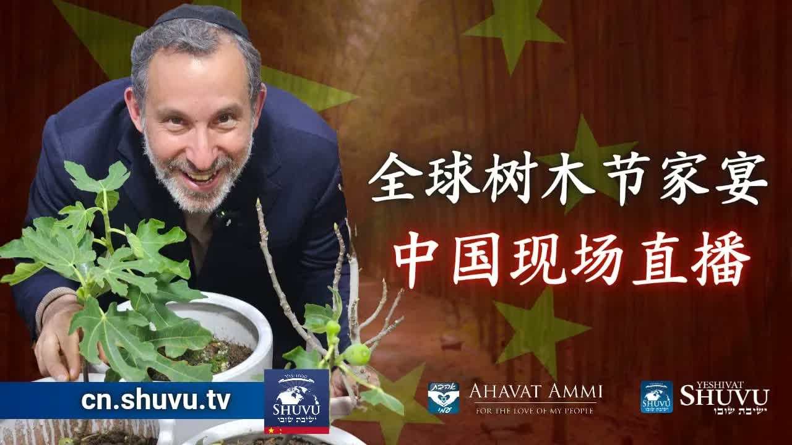

树木新年 · 中国现场 ── 在末世种下从锡安来的好种子 Tu BiShvat Live from China — Planting Seeds from Zion in the Last Days
在树木新年(Tu BiShvat, ט"וּ בִּשְׁבָט) 的那一天，沙皮拉拉比博士从中国现场，把「好树结好果子」连到「中国余民」与「新彌賽亞丝绸之路」上——并直接对全球宣告：「我们不是在祷告，我们是在宣告。」 On Tu BiShvat (ט"וּ בִּשְׁבָט) — the New Year of Trees — Rabbi Dr. Shapira stands live in China and connects “a good tree bears good fruit” to “the Chinese remnant” and a coming “new Messianic Silk Road,” issuing a global declaration: “We are not praying — we are declaring.”
在圣历「细罢特月」(Shevat, שבט) 第十五日——犹太人的树木新年 Tu BiShvat (ט"וּ בִּשְׁבָט)——沙皮拉拉比博士并不在耶路撒冷的会堂，他站在中国的一棵树下。镜头里，是从北京到上海、香港到内蒙古、台湾到东南海岸的中文家人在一同同步收看的全球家宴。他指着头顶的树枝直接对世界说：「好树必结好果子；这片土地上有良善、纯洁、爱、尊荣与正直， 不是西方媒体让你以为的那一种中国。」 在果子与树之间、在耶书亚(Yeshua, ישוע) 与马太福音七章之间、在古丝绸之路与「新彌賽亞丝路」之间，他打开了一幅在末世重新打开的属灵地图——从锡安来的好种子要在中国扎根，从中国出发的余民要走回锡安。 On the fifteenth of Shevat (שבט) — the Jewish New Year of Trees, Tu BiShvat (ט"וּ בִּשְׁבָט) — Rabbi Dr. Shapira is not in a Jerusalem synagogue. He is standing in China, under a tree. On the broadcast: Chinese family from Beijing to Shanghai, Hong Kong to Inner Mongolia, Taiwan to the southeastern coast, watching together. He points at the branches above his head and tells the world: “A good tree bears good fruit. This land has goodness, purity, love, honor, and righteousness — this is not the China the Western media made you imagine.” Between fruit and tree, between Yeshua (ישוע) and Matthew 7, between the old Silk Road and the “new Messianic Silk Road,” he opens an end-times map: good seeds from Zion are taking root in China — and a Chinese remnant is walking the road back to Zion.
一、树木新年 (Tu BiShvat) ── 「果子」被记念的那一日I. Tu BiShvat — The Day the Fruit Is Remembered
犹太传统里有四个「新年」(Rosh Hashanah, ראש השנה)：尼散月初一是君王的新年；以禄月初一是牲畜什一的新年；提斯利月初一是世界的新年；而细罢特月十五日——即Tu BiShvat——则是众树的新年。它出自米示拿(Mishnah, משנה) 的「罗什哈沙那」卷一章一节。在拉比的视野里，这一天并不是节令小事；这是整个犹太历最公开地把「果子」摆上桌面的时刻。 Jewish tradition counts four New Years (Rashei Shanim): the first of Nisan for kings, the first of Elul for cattle tithes, the first of Tishrei for the world — and the fifteenth of Shevat, Tu BiShvat, for the trees. This is stated in the Mishnah (משנה), Rosh Hashanah 1:1. In the rabbi's reading, this day is no small calendar curiosity — it is the moment in the entire Jewish year when fruit is placed most publicly on the table.
重要的，不是表面上的「为植物贺岁」。Tu BiShvat 是司法日 (yom ha-din, יום הדין) 的延伸——这一天树的「果子有没有结出来」被记在天上的账上。所以拉比选择在这一天从中国现场开讲，意义就远过节庆：他正在把全球听众的目光，引向一道至要紧的问题——「你这棵树结的，是好果子还是烂果子？」 The point is not surface-level “tree-cheerfulness.” Tu BiShvat is an extension of a Day of Judgment (yom ha-din, יום הדין): the day a tree's fruitfulness — or barrenness — is registered in heaven. So when Rabbi Shapira chooses to teach live from China on this exact day, the meaning is no longer ceremonial. He is turning the world's eyes to one urgent question: “What is your tree bearing — good fruit, or rotten fruit?”
二、马太福音 7 章 ── 末世的真信徒由果子认出II. Matthew 7 — In the Last Days, the Real Believer Is Known by His Fruit
拉比直接打开马太福音 7:15–20——一段在末世变得越来越无可回避的经文：「你们要防备假先知，他们到你们这里来，外面披着羊皮，里面却是残暴的狼。凭着他们的果子，就可以认出他们来。」果子是末世的身份证。在Birurim（בירורים，「分辨之时代」）的语境里，每棵树的真伪都将被显露。 The rabbi opens directly to Matthew 7:15–20, a passage that grows more unavoidable as the End approaches: “Beware of false prophets, who come to you in sheep's clothing but inwardly are ravenous wolves. You will know them by their fruits.” In the End Times, fruit is the ID. In the era of Birurim (בירורים, “sifting”), every tree's true nature is exposed.
再往下两节，耶书亚就把这把刀按在每一位「信主之人」的颈上：「凡称呼我『主啊，主啊』的人不能都进天国；唯独遵行我天父旨意的人，才能进去。」（马太福音 7:21）。在拉比看来，这并不是一段单纯的「行为对比信心」的对话——这是果子比口号更有权威的宣告。 Two verses later, Yeshua lays the blade directly across the neck of every professing believer: “Not everyone who says to Me, ‘Lord, Lord,' shall enter the kingdom of heaven, but he who does the will of My Father in heaven” (Matthew 7:21). For Rabbi Shapira this is not a tame “works vs. faith” debate. It is the declaration that fruit outweighs slogans in the final accounting.
「不是所有对我说『主啊，主啊』的人，都能进天国；唯有遵行我天父旨意的人，才能进天国。」——马太福音 7:21 “Not everyone who says to me, ‘Lord, Lord,' shall enter the kingdom of heaven, but he who does the will of My Father in heaven.”— Matthew 7:21
三、圣灵的果子 ── 末世仍然必结的九味III. The Fruit of the Spirit — The Nine Flavors That Must Still Come Forth in the End
「好果子」具体长什么样？拉比顺着加拉太书 5:22–23 列出来：「圣灵所结的果子，就是仁爱、喜乐、和平、忍耐、恩慈、良善、信实、温柔、节制。」这九样并不是九种「美德」——希腊文用的是单数 karpos（果子，单一棵树上的一组特征），希伯来文背景所对应的概念是「perot ha-ruach」（פירות הרוח，「圣灵的果实」）。也就是说：它们要么同时从一棵真树上长出来——要么这棵树根本不是好树。 What does “good fruit” actually look like? The rabbi reads from Galatians 5:22–23: “The fruit of the Spirit is love, joy, peace, patience, kindness, goodness, faithfulness, gentleness, self-control.” These nine are not nine separate “virtues” — the Greek is singular, karpos, one cluster of marks on a single tree. The Hebrew-shaped concept behind it is perot ha-ruach (פירות הרוח, “fruits of the Spirit”). Either they appear together on a true tree — or the tree itself is not good.
紧接着的 5:24 把根挑出来：「凡属基督耶稣的人，是已经把肉体连肉体的邪情私欲同钉在十字架上了。」果子之所以能够长出来，并不是靠人「努力做好」——而是因为那个旧的「我」已经在十字架上被钉死了。这是属灵植物学：先死，后果。 Verse 5:24 names the root: “Those who are Christ's have crucified the flesh with its passions and desires.” The fruit grows, not because someone is “trying harder,” but because the old self has been nailed to the cross. This is the rabbi's spiritual botany: death first, fruit after.
对每一位身处末世巨大压力之下的中国信徒——以及任何一位被全球时代风浪拍打的基督徒——这一节都构成一面镜子：不是你在事奉里有多忙，而是你身上是否仍然在长出仁爱、喜乐、和平。这是「好树」与「烂树」之间唯一的辨别标准。 For every Chinese believer feeling the weight of the End, and for every Christian battered by the global storm, this is a mirror: not how busy you are in ministry, but whether love, joy, and peace are still visibly growing on you. This is the only distinction between a “good tree” and a “rotten tree.”
四、「树就是田野上的人」── 中国家庭即一片树林IV. “A Tree Is a Person in the Field” — The Chinese Family as a Living Forest
在传讲到一半的时候，拉比给出一句把整场聚会的隐喻全部钉死的话：「树是什么？树就是田野上的人。」这句话直接呼应了申命记 20:19——「人岂是田间的树木？」（希伯来文 ki ha'adam etz ha-sadeh?，כי האדם עץ השדה）——传统犹太注释家把它读为肯定句：是的，人就是田野上的树。 Halfway through the teaching, the rabbi nails down the whole metaphor with one line: “What is a tree? A tree is a person in the field.” This echoes Deuteronomy 20:19 — “For is a man a tree of the field?” (Hebrew ki ha'adam etz ha-sadeh?, כי האדם עץ השדה) — which traditional Jewish commentators read affirmatively: yes, a person is the tree of the field.
「树是什么？树就是田野上的人。」——沙皮拉拉比博士 “What is a tree? A tree is a person in the field.”— Rabbi Dr. Itzhak Shapira
这就把整场Tu BiShvat 庆典从「为植物贺岁」搬到了为人贺岁。拉比向镜头里中国大陆每一座城市的家人喊话：「我们宣告中国余民的良善。」这不是恭维——这是一场司法日性的宣判。他选择在这一天，把一句关乎人之命运的判决，借树之名而下：中国余民这棵树，结的是好果子。 This drags the whole Tu BiShvat celebration off of plants and onto people. The rabbi calls out to the Chinese family city by city: “We declare the goodness of the Chinese remnant.” This is not flattery — it is a Day-of-Judgment verdict. On this exact day, he speaks a verdict over a people, under the cover of a tree: this tree, the Chinese remnant, is bearing good fruit.
五、「我们不是在祷告，我们是在宣告」V. “We Are Not Praying — We Are Declaring”
整场讲解中最被反覆敲打的一句话，是这一句：「我们不是在祷告，我们是在宣告。」这并不是要否定祷告——他依然在最后为中以关系恳切祷告。这句话的指向是另一件事：「祷告」是把目光举向天；而「宣告」(hatzharah, הצהרה / davar, דבר) 是把天的话说出来落地。 The line he repeats more than any other is this: “We are not praying — we are declaring.” He is not dismissing prayer — he closes the session with prayer for China and Israel. The line points at something else: prayer lifts the eyes upward, while declaration (hatzharah, הצהרה, or simply davar, דבר — “word, decree”) takes what heaven has already said and speaks it into the ground.
这个区分有深厚的拉比传统背景。创世记 1 章的「神说，要有光」，希伯来文是 vay'omer Elohim, yehi or（ויאמר אלהים יהי אור）——「说」(amar, אמר) 即是「使其存在」。在Tu BiShvat 这一天，拉比所做的并不是为中国向天父祷告「请你赐福」——他是站在一棵活树底下，按父神早已在以赛亚书 49 章对「远方众民」所说的话，宣告这棵树要长大、要结果、要被列国看见。 The distinction has deep rabbinic roots. Genesis 1's “God said, ‘Let there be light'” is, in Hebrew, vay'omer Elohim, yehi or (ויאמר אלהים יהי אור) — to say (amar, אמר) is to cause to exist. On Tu BiShvat, the rabbi is not asking the Father to “please bless” China — he is standing beneath a living tree and, on the basis of what the Father has already spoken in Isaiah 49 about the peoples afar, declaring that this tree will grow, bear fruit, and be seen by the nations.
「我们今天宣告。我们不是在祈祷，我们是在宣告。来宣告神的良善。宣告神在这些树上所做的见证。」——沙皮拉拉比博士 “Today we declare. We are not praying — we are declaring. To declare God's goodness. To declare the testimony God has worked into these trees.”— Rabbi Dr. Itzhak Shapira
六、不要听信媒体的报导 ── 拉比对西方观众的直接挑战VI. “Do Not Believe the Media” — The Rabbi's Direct Challenge to the West
在拉比所有「宣告」之中，有一句是直接朝着西方观众丢出来的——他特别点名：「我要告诉大家一件事，特别是西方的人们：不要听信媒体的报导。这片土地上有良善、有纯洁、有爱、有尊荣、以及正直。」这并不是政治评论。这是一句属灵判断：媒体所讲的「中国」，与神所看见的「中国余民」，并不是同一棵树。 Among all his declarations, one is thrown directly at the Western audience — he names them: “I want to tell you something, especially you in the West — do not believe the media. There is goodness, purity, love, honor, and righteousness in this land.” This is not political commentary. It is a spiritual judgment: the “China” that the media describes is not the same tree as the “Chinese remnant” that God sees.
「我要告诉大家一些事情，特别是西方的人们。不要听信媒体的报导。这片土地上有良善和纯洁。还有爱，和荣耀。以及正直。」——沙皮拉拉比博士 “I want to tell you all something, especially those of you in the West. Do not believe the media reports. There is goodness and purity in this land. And love, and honor. And righteousness.”— Rabbi Dr. Itzhak Shapira
拉比并不是说媒体里的每一条新闻都假——他是在挑战「整个画框」。当一个西方读者打开手机，他看到的「中国」是政府、是地缘政治、是贸易战、是镜头里挑选出来的画面。当拉比抬头看头顶的树枝，他看到的「中国」是从北京到内蒙古、从台湾到上海一同同步收看的家人。这两个「中国」并不是同一棵树。 He is not saying every news item is false — he is challenging the entire frame. The “China” a Western reader sees on his phone is governments, geopolitics, trade wars, curated footage. The “China” the rabbi sees when he looks up at the branch above him is the family from Beijing to Inner Mongolia, Taiwan to Shanghai, watching together. These are not the same tree.
七、把从锡安来的好种子种在中国VII. Planting Seeds from Zion in Chinese Soil
拉比在中国土地上做了一个有象征意义的动作——他种下一棵树。在Tu BiShvat 这一天种树，本身就是米示拿所设立的传统；但他强调这棵树的种子不是普通种子：「我们相信，从锡安来的善种，将在这里种下。」 On Chinese soil, the rabbi performs an action carrying its full symbolic weight — he plants a tree. Planting on Tu BiShvat is itself an ancient Mishnaic custom. But he insists this tree's seeds are not generic: “We believe that good seeds from Zion are being planted here.”
这句话表面上很温柔，实际上含一道清晰的属灵地理学：种子的来源决定果子的本性。从锡安 (Tziyon, ציון) 来的种子，长出的树是锡安的树——其根扎在以色列的约里、其枝伸向万族、其果反映出妥拉与彌賽亞的性情。这呼应了以赛亚书 2:3 那句众所周知的预言：「训诲必出于锡安，耶和华的言语必出于耶路撒冷。」 Beneath the gentle phrasing is a hard spiritual geography: the source of the seed determines the nature of the fruit. Seeds from Tziyon (ציון) produce trees that are Zion's trees — rooted in the covenant with Israel, branched toward every nation, fruited with the character of Torah and Messiah. This echoes Isaiah 2:3's famous line: “For out of Zion shall go forth the Torah, and the word of the Lord from Jerusalem.”
用罗马书 11 章保罗的画像来说，这就是「嫁接 (engrafted, enkentristhē) 到那棵橄榄树」之中。中国的余民并不是「被种在一旁的另一棵新树」——他们是在同一棵从亚伯拉罕、以撒、雅各延伸下来的树上结出的果子。这就是拉比「从锡安来的好种子」背后的全部神学重量。 In Paul's image (Romans 11), this is being grafted (enkentristhē) into the olive tree. The Chinese remnant is not “a new separate tree planted nearby” — they are fruit on the same tree that runs back through Abraham, Isaac, and Jacob. This is the full theological weight behind the rabbi's quiet line about “good seeds from Zion.”
八、新彌賽亞丝绸之路 ── 中以联通的预言图像VIII. The New Messianic Silk Road — A Prophetic Picture of China and Israel Joined
拉比把Tu BiShvat 现场所发生的一切，最终连到一条路——「新彌賽亞丝绸之路」。古丝绸之路曾把中国的绸缎、茶叶、思想送达地中海与耶路撒冷；现在他宣告，一条属灵的丝路正在末世被重新打开，但方向同时是双向的：好种子从锡安进入中国，余民从中国走向锡安。 The rabbi ties everything that has happened during this Tu BiShvat live session to a single road — the “New Messianic Silk Road.” The ancient Silk Road once carried Chinese silk, tea, and ideas to the Mediterranean and to Jerusalem. Now, he declares, a spiritual Silk Road is being reopened in the End Times — and this one runs both directions: seeds from Zion into China, and a remnant from China back to Zion.
为何在Tu BiShvat 这一天宣告？因为树木新年不仅是「果子之日」——它也是果子第一次能被合法摘取的开关。按利未记 19:23–25 的orlah（ערלה）律例，树头三年的果子不可吃，第四年献给神，第五年才可享用。Tu BiShvat 正是这一年龄计算的分界线。换言之，这一天宣告的，是「门已经打开，时候已经到了」——锡安与中国之间属灵的果实，从今以后是可以被采、献、享的。 Why declare this on Tu BiShvat? Because the New Year of Trees is more than a “fruit day” — it is the switch that determines when a tree's fruit becomes lawfully harvestable. Under the orlah (ערלה) statute of Leviticus 19:23–25, the fruit of the first three years may not be eaten; the fourth year is given to the Lord; the fifth year is enjoyed. Tu BiShvat is the boundary of that age count. To declare on this day is to declare that “the door is open, the season has come” — the spiritual fruit between Zion and China can, from now on, be harvested, offered, and enjoyed.
「为了关系。中国与以色列的关系。主啊，请你联合这些人民。带来联盟。带来商业发展。带来商业的合夥。恢复这段关系。在新的丝绸之路上。」——沙皮拉拉比博士 “For the relationship — the relationship between China and Israel. Lord, unite these peoples. Bring alliance. Bring commercial development. Bring partnership. Restore this relationship — on the New Silk Road.”— Rabbi Dr. Itzhak Shapira
九、关于分辨IX. A Word on Discernment
这场Tu BiShvat 直播最强的地方在于：它把经文一棒接一棒地砸下来——马太 7、加拉太 5、申命记 20、利未记 19、米示拿罗什哈沙那。每一段都站得稳。问题不在经文，而在应用。拉比从「好树结好果子」的字面经文一路推到「中国余民必将结好果子」与「新彌賽亞丝绸之路必将打开」——这是drash（讲道层）的飞跃，不是p'shat（字面层）的复述。读者应该欢迎这种飞跃，但要带着分辨。 The strength of this Tu BiShvat broadcast is that it lands one Scripture after another — Matthew 7, Galatians 5, Deuteronomy 20, Leviticus 19, Mishnah Rosh Hashanah. Each text stands. The issue is not the text but the application. The rabbi moves from the plain words “a good tree bears good fruit” to “the Chinese remnant will surely bear good fruit” and “the New Messianic Silk Road will open” — that is a drash leap, not p'shat repetition. The reader should welcome the leap, but with discernment.
更具体地说：「不要相信媒体」这一句，可以是属灵的真知，也可以被滥用为政治站队。拉比所讲的属灵真知是：媒体看不见祷告中的家人。它不意味着：这片土地上任何一项政策都自动正确。这两件事必须分开。同样，「新彌賽亞丝绸之路」的图像，是先知性的盼望，不是地缘政治的预测——它指向神在万国中的工作，而不是任何具体的「一带一路」项目。 More concretely: “do not believe the media” can be a spiritual truth — or it can be misused as political alignment. The rabbi's spiritual truth is that the media cannot see the family at prayer. It does not mean that every policy made on this soil is automatically correct. These two things must be kept separate. Similarly, the “New Messianic Silk Road” is a prophetic image of hope, not a geopolitical forecast — it points to God's work among the nations, not to any particular Belt-and-Road project.
拉比自己也亲口说：「我们不是在祷告，我们是在宣告。」这种「宣告」语气在拉比传统里有渊源，但它也极容易被滥用为「我说什么，神就照我办」式的话术。本文建议读者把每一句「宣告」回到圣经经文中——你能找到这一句宣告所立足的经文吗？如果有，谨慎地接受；如果没有，谨慎地搁置。 The rabbi himself says aloud: “We are not praying — we are declaring.” This “declarative” register has deep rabbinic roots, but it is also dangerously close to a “I-speak-and-God-must-perform” style of word-of-faith abuse. As you read, weigh each declaration against Scripture: can you locate the verse on which this declaration stands? If yes, receive it carefully. If no, set it aside carefully.
十、对中国余民的呼召 ── 你就是田野上的那棵树X. A Call to the Chinese Remnant — You Are the Tree of the Field
拉比这场讲解最终对准的，是中国大陆每一座城市里那群无法完全露脸、却仍然按时聚集、按时祷告、按时学习希伯来文的弟兄姊妹。他对他们说了一句不带任何条件的话：「我们宣告中国余民的良善。我们所有的中国人民，都将有好的见证。」 The ultimate aim of this entire teaching is one thing: every brother and sister in every Chinese city whose face cannot fully appear on camera — and who nevertheless gathers on time, prays on time, studies Hebrew on time. To them the rabbi speaks an unconditional sentence: “We declare the goodness of the Chinese remnant. All of our Chinese people will have a good testimony.”
对你——读这篇文章的华人基督徒——这场讲解至少留下三件事：第一，果子是末世的身份证。不要为没结出果子的事工焦虑——回到加拉太 5:22，问神：仁爱、喜乐、和平、忍耐、恩慈、良善、信实、温柔、节制，哪一味今天最缺？让神在那一味上动工。第二，你这棵「田野上的树」，根要继续扎在锡安的种子里。不要被「中国基督徒应当独立自主」之类的话切断你与以色列、与亚伯拉罕之约的关系——你是嫁接进去的，根不可拔。第三，学会「宣告」——不是空话，而是按神已经说过的话，把它对准你的家庭、你的城市、你的同行者，一字一句说出来。 For you — the Chinese Christian reading this — three things remain: First, fruit is your end-times ID. Don't fret over a ministry that hasn't borne fruit yet — return to Galatians 5:22 and ask the Lord: of love, joy, peace, patience, kindness, goodness, faithfulness, gentleness, self-control — which flavor is most missing today? Let Him work there. Second, your roots, as a tree in the field, stay anchored in the seeds of Zion. Do not let any rhetoric of “Chinese Christian autonomy” sever your connection to Israel and the covenant of Abraham — you are grafted in; the root may not be pulled out. Third, learn to declare — not empty words, but the words God has already spoken, aimed sentence by sentence at your home, your city, your walking partner.
「如果树是好的，那么人也是好的。我们宣告中国余民的良善。我们所有的中国人民，都将有好的见证。让丝绸之路再次打开。在新的彌賽亞丝绸之路上。阿们！」 “If the tree is good, then the people are good. We declare the goodness of the Chinese remnant. All of our Chinese people will have a good testimony. Let the Silk Road open again — on the New Messianic Silk Road. Amen.”